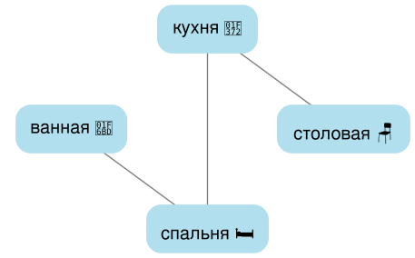
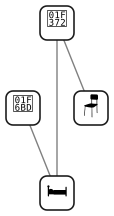
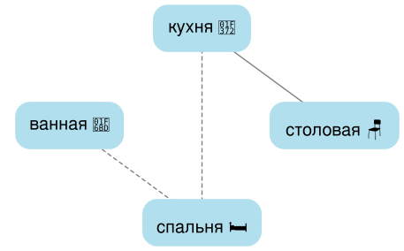
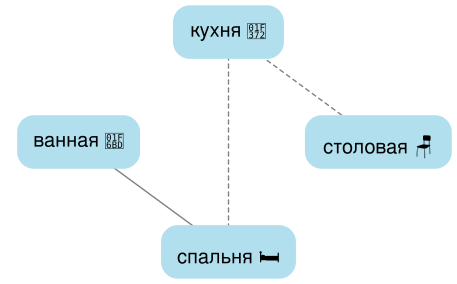

📸 Подозреваемый

mystery-o-matic — это сайт, предлагающий бесплатные детективные загадки для ежедневного решения. Он был создан двумя увлечёнными людьми, которые разделяют глубокую любовь к тайнам и стремятся предложить уникальный опыт своим коллегам-детективам.
В отличие от типичных игр, ежедневные тайны на этом сайте требуют дедуктивного мышления, но разработаны так, чтобы отражать непредсказуемость реальных сценариев, делая их более сложными и разнообразными по уровню трудности. Вместо того чтобы следовать предопределённому пути дедукции, каждая ежедневная тайна синтезируется через случайное исследование, предлагая освежающий поворот по сравнению с традиционными логическими играми.
Создатели черпали вдохновение из популярных игр, таких как Cluedo (разумеется), "Infinite Detective" от Squidi и Murdle, чтобы создать захватывающий мир mystery-o-matic. Код, автоматически создающий ежедневные загадки, а также весь остальной сайт имеет открытый исходный код! Изображения подозреваемых взяты с Freepik: [1], [2] [3] [4] [5] [6] [7]
Сайт всё ещё находится в стадии бета-тестирования, поэтому правила, интерфейс и дизайн могут измениться! Не стесняйтесь оставить отзыв здесь или на нашем сабреддите.
Если вам нравится сайт и вы хотите поддержать нашу работу, вы можете пожертвовать криптовалюту по адресу: 0xd0FD96CD73762Fd081cf2269D79F359e4314629b
Этот раздел показывает различные уровни оценки, которые вы можете получить после решения ежедневной тайны.
mystery-o-matic возрождает легендарный sleuth-o-meter™ из тайн Лоры Боу, чтобы отслеживать ваш счёт:

Каждая раскрытая подсказка будет снижать ваш счёт. Имейте в виду, что сайт всё ещё находится в бета-версии, поэтому система оценок, интерфейс или дизайн могут измениться. Не стесняйтесь оставлять отзывы здесь или на нашем сабреддите.
Совет: чтобы вернуться к игре в любой момент, нажмите значок 🧩 в правом нижнем углу экрана.

В этом учебнике Alice была убита до 9:30 в особняке, её тело найдено на кухне (🍲). Мы будем использовать таблицу хронологии, чтобы восстановить это преступление. Начнём с некоторых основных фактов, которые мы знаем точно:

Список начальных улик описывает, где находился каждый персонаж в 9:30 — в конце хронологии. Ваша задача — делать выводы, используя показания подозреваемых и другие улики: кто убийца, какое оружие использовалось и когда произошло преступление. Мы можем отмечать в хронологии тремя простыми символами: ✓ означает, что кто-то был там, ✗ означает, что не был, а ? означает, что мы не уверены.
В нижней части таблицы хронологии находится раздел оружия, показывающий, где находилось каждое доступное оружие. Например, убийца взял орудие убийства из одного из следующих мест:
Вот где начинается самое интересное! Подозреваемые могут перемещаться между комнатами каждые 15 минут (они подозрительно пунктуальны), следуя планировке.
Они могут перемещаться только в непосредственно связанные комнаты за каждый 15-минутный промежуток, никаких сокращённых путей.
допускается! Думайте об этом как о ходах на шахматной доске: нужно проходить клетки по одной.
Например, если Carol хочет перейти из столовой (🪑) в спальню (🛏️), она должна:
☞ Bob: «Я видел Alice, когда прибыл в спальню (🛏️) в 8:15»
Что мы можем из этого вывести? Довольно много на самом деле:
Нажмите на каждый вывод, чтобы зачеркнуть текст — это поможет сосредоточиться на других уликах
(попробуйте с уликами, показанными выше рядом с лупой!).
Используя эти выводы, мы можем начать заполнять таблицу хронологии:
Как только мы добавляем это в расписание, начинают появляться другие выводы! Поскольку наши
подозреваемые не освоили искусство быть в двух местах одновременно, мы также можем выяснить, где их
не было:
Добавим пропущенные выводы:
Но где был Bob в 8:00? Вот где нам пригодится схема комнат:
В этой схеме спальня соединена сплошными линиями с кухней и ванной. Эти сплошные линии представляют прямые соединения — комнаты, между которыми персонажи могут перемещаться за один 15-минутный промежуток. Пунктирная линия к столовой показывает косвенное соединение — персонажам нужно сначала пройти через другую комнату, чтобы добраться туда. Поскольку спальня соединена и с кухней, и с ванной, Bob мог прийти из любой из них. Но вот твёрдый вывод — Bob не мог быть в столовой в 8:00, потому что она не соединена со спальней!
Используя эту информацию, мы можем добавить ещё один вывод в таблицу хронологии:
Другие типы улик описывают, когда подозреваемые проводят время в определённом месте. Например:
☞ Carol: «Я была в столовой (🪑) с 8:00 до 8:45»
Это говорит нам:
Где была Carol в 9:00? Обратимся к схеме особняка, чтобы разобраться:

Заполним таблицу хронологии всеми этими выводами:
Вот ещё один интересный тип улик:
☞ Bob: «Никого не увидел, когда прибыл в ванную (🚽) в 9:00»
Разберём по частям:
Что ещё мы можем получить из этой улики? Взглянем снова на схему расположения комнат:

Эта улика не только помещает Bob в ванной в 9:00, но мы также можем использовать обратный анализ — он должен был быть в спальне в 8:45, поскольку это единственный путь в ванную! Другими словами:
Пора добавить наши новые выводы в таблицу хронологии:
Наконец, иногда мы получаем расплывчатые улики от подозреваемых:
☞ Carol: «Я слышала, как кто-то моет посуду в 8:45»
Эта улика говорит нам, что кто-то был на кухне. Подождите, можно ли мыть посуду в ванной? Нет, это совершенно нелепо (это к вам, The Sims™). Давайте посмотрим, что мы уже вывели:
Может возникнуть соблазн угадать, где была Carol, но это невозможно. Персонажи иногда
могут слышать или видеть кого-то в других комнатах, но местонахождение нельзя вывести из этого типа
улики.
Однако, используя наши предыдущие наблюдения, мы можем вывести, кто был на кухне. Явно,
это была не Carol (она была в другом месте в 8:45 на самом деле!). Также мы знаем, что Bob был в спальне,
что означает, что Alice была на кухне в 8:45.
Наша первая попытка сделать выводы была не очень, поэтому давайте пересмотрим наш предыдущий вывод и уточним его:
Вернёмся к таблице хронологии...
☞ Леденящий кровь крик жертвы был слышен между 8:45 и 9:00
Поскольку наши подозреваемые передвигаются каждые 15 минут как часы, убийство должно было произойти либо в 8:45, либо
в 9:00. Однако мы уже знаем, что Alice была жива в 8:45 (и мирно мыла посуду). Так что
единственный вариант — убийство произошло в 9:00. Помните, что после удара убийцы
тело жертвы никогда не перемещают, поэтому можно легко дополнить хронологию Alice до 9:30.
☞ Осмотр тела не выявляет признаков колотых ран
Чтобы исключить конкретное оружие, нам нужно знать, какие раны оно наносит. Просто нажмите на тип ранения, описанный в улике (например, колотые раны), и вы увидите список возможных орудий.
Располагая этой информацией, мы можем исключить оружие в нижней части таблицы хронологии, просто нажав на соответствующий значок оружия/места: ✂️🍲
Пора свести всё воедино и раскрыть наше первое дело. Ниже представлена таблица хронологии со всеми нашими выводами:
Подумайте и нажмите, чтобы раскрыть каждый ответ:
Знаете, что особенно умно в этом подходе? Мы восстановили большую часть хронологии, но место, где находилась Alice в 8:30, остаётся загадкой. И это не упущение — это важный урок! Помните, что говорилось в начале: «восстанавливать всю хронологию не обязательно и часто невозможно»? Вот этот принцип в действии. Мы раскрыли дело (Carol, молотком, в 9:00), не отслеживая каждый шаг Alice. Это наглядно показывает, как эти головоломки отражают реальную работу детектива.
Дело закрыто! Было не так уж сложно, правда? Ну а если вы хотите стать настоящим супер детективом 🕵️, вам стоит узнать ещё несколько приёмов. Следующие разделы помогут вам справляться с более сложными (и интересными!) делами.
Есть мощный приём для быстрого подтверждения или исключения потенциальных орудий убийства, основанный на этой ключевой улике:
☞ Убийца был один, когда взял орудие убийства.
Сочетая этот вывод с подозрениями об убийце и времени преступления, можно делать решающие дедукции. Рассмотрим, как это работает:
☞ Alice: «Я была в спальне с 8:00 до 8:30»
Предположив, что Alice НЕ убийца и преступление произошло после 8:30, мы приходим к выводу:
Напротив, если Alice — убийца и преступление произошло после 8:30, нужно проверить, была ли она одна в 8:00, 8:15 или 8:30, чтобы сделать вывод:
Используя этот приём дедукции, можно быстро определить использованное орудие и раскрыть дело!
Перед началом каждого расследования вы можете решить, может ли убийца лгать в своих показаниях или нет. Если вы готовы к трудностям, придётся считать, что любое показание подозреваемых может быть ложью.
Ложь в ходе расследования — дело серьёзное! Убийца должен быть очень осторожен, поскольку остальные подозреваемые всегда говорят правду. На практике убийца врёт только тогда, когда это помогает скрыть своё присутствие в месте и во время преступления.
Установить личность убийцы по ненадёжным показаниям обычно сложнее, поскольку мы не знаем, правда это или ложь. Но не всё потеряно: остальные подозреваемые всегда говорят правду. Обнаружить ложь просто: нужно найти противоречие между двумя показаниями. Рассмотрим пример:
☞ Bob: «Я был на кухне с 9:00 до 10:00»
☞ Carol: «Когда я пришла на кухню в 9:30, там никого не было»
Это противоречие сразу говорит вам кое-что важное — мы знаем, что ровно одно из следующих утверждений должно быть правдой:
Pro Tip™: начните с предположения, что все утверждения правдивы. Когда вы обнаружите противоречие, вы нашли пару потенциальных убийц.
Можно пойти ещё дальше: если мы знаем (или подозреваем), кто убийца, мы можем вычислить, какие утверждения правдивы, а какие ложны, используя время и место убийства. Давайте посмотрим, что говорил Bob:
☞ Bob: «Был в спальне с 8:00 до 9:00»
☞ Bob: «Я был на кухне с 9:00 до 10:00»
Предположим, что Bob — убийца и что убийство произошло после 9:30 в ванной (🚽). Тогда он лжёт только для того, чтобы не попасться — только о месте и времени убийства. Значит, оба этих утверждения должны быть правдой:
Первое утверждение должно быть правдой, поскольку у Bobа нет причин рисковать и лгать — оно не касается времени или места убийства. Второе тоже правдиво, так как мы знаем, что Bob — убийца, а значит, знаем время и место преступления: ложь о кухне никак не поможет скрыть то, что произошло в ванной после 9:30.
Группа друзей натыкается на жуткий заброшенный особняк. Оказавшись в ловушке его зловещих
стен, они оказываются втянуты в череду жестоких убийств. Каждый день — новая загадка:
один из них — несчастная жертва, остальные — подозреваемые.
Приготовьтесь раскрыть новое дело об убийстве! Ваша задача — выяснить, кто это сделал, когда это произошло и каким оружием.
$introLocationПомогите им разгадать тайну, изучив начальные улики:

Вы получите улики, которые постепенно откроют правду об убийстве. Ежедневную головоломку можно решать в двух режимах. В лёгком режиме все говорят правду. Необязательно: убийца может иногда лгать — для тех, кто ищет более сложную задачу.
Каждая прочитанная улика влияет на ваш счёт. Думайте внимательно, собирая доказательства и допрашивая подозреваемых. Раскрыв дело, вы получите звание от знаменитого sleuth-o-meter™.
Готовы к испытанию? Начинаем расследование!
Используйте эту таблицу для отслеживания фактов, улик и выводов. При необходимости загляните в раздел «Как играть».
Выберите режим: убийца никогда не лжёт (проще) или может солгать (сложнее).
CLUE

Вы провели ночь, собирая доказательства и анализируя улики. Пора раскрыть дело, указав
подозреваемого, время убийства и оружие. Предупреждение: если вы ошибётесь,
можно попробовать снова, но
Доказательная база против обвиняемого неопровержима. Петля довольна.
Поздравляем с раскрытием дела! Вы решили сегодняшнюю загадку со званием sleuth-o-meter™:
Возвращайтесь завтра за новым испытанием.
Перед вами запутанная головоломка, полная противоречивых улик. Очевидно, что-то не так: личность подозреваемого, время преступления или даже выбранное оружие могут оказаться ошибочными.
Петля недовольна и резко сбрасывается — на сегодня подсказок больше нет. Возвращайтесь завтра за новым испытанием.